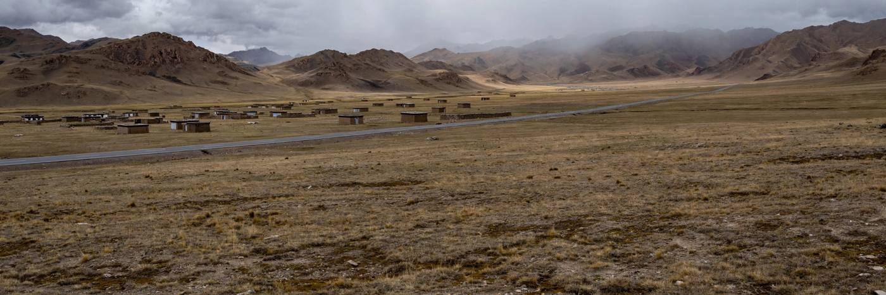

उत्तरी तिब्बत में 7 तीव्रता का भूकंप, 2024 के बाद चीन का सबसे शक्तिशाली
उथला भूकंप गुरुवार स्थानीय समय रात 10:33 बजे नागछू के बाछेन काउंटी में 10 किलोमीटर गहराई पर आया। शुरुआती वायर रिपोर्टों में कहा गया कि हताहतों और नुकसान का पता अभी नहीं चला था।

मुख्य बिंदु
- भूकंप में घायलों की संख्या बढ़कर 65 हो गई है, जबकि मृतकों की संख्या 16 पर बनी रही, रॉयटर्स ने शुक्रवार को बताया। चीन भूकंप नेटवर्क केंद्र ने 413 झटके दर्ज किए हैं। सरकारी समाचार एजेंसी शिन्हुआ ने…
- रॉयटर्स ने बताया कि स्थानीय सरकार के अधिकारियों ने शुक्रवार को प्रेस कॉन्फ्रेंस में कहा कि भूकंप में घायलों की संख्या बढ़कर 76 हो गई है, जबकि मृतकों की संख्या 16 पर बनी हुई है। अधिकारियों ने कहा…
- द हिंदू बिज़नेसलाइन द्वारा उद्धृत शिन्हुआ ने निकाले गए लोगों की संख्या 12,489 बताई और कहा कि चीन ने आपातकालीन आपदा राहत कोष में 50 मिलियन युआन आवंटित किए हैं और बहाली के लिए 30 मिलियन युआन और रखे…
अद्यतन 18:30 UTC, 23 अक्टूबर 2026
भूकंप में घायलों की संख्या बढ़कर 65 हो गई है, जबकि मृतकों की संख्या 16 पर बनी रही, रॉयटर्स ने शुक्रवार को बताया। चीन भूकंप नेटवर्क केंद्र ने 413 झटके दर्ज किए हैं। सरकारी समाचार एजेंसी शिन्हुआ ने बताया कि 12,000 से अधिक लोगों को सुरक्षित स्थानों पर पहुंचाया गया है, और भूकंप में 339 घर ढह गए। बचाव और राहत कार्य के लिए नागछू के बाछेन काउंटी में भूकंप केंद्र क्षेत्र में 300 से अधिक पुलिस अधिकारी भेजे गए। यह भूकंप जनवरी 2024 के बाद से चीन का सबसे शक्तिशाली भूकंप बना हुआ है। अधिकारियों ने शुक्रवार को बाद में घायलों की संख्या बढ़ाकर 76 कर दी, जैसा कि नीचे के अद्यतन में बताया गया है।
अपडेट 10:23 UTC, 23 अक्टूबर 2026
रॉयटर्स ने बताया कि स्थानीय सरकार के अधिकारियों ने शुक्रवार को प्रेस कॉन्फ्रेंस में कहा कि भूकंप में घायलों की संख्या बढ़कर 76 हो गई है, जबकि मृतकों की संख्या 16 पर बनी हुई है। अधिकारियों ने कहा कि मुख्य भूकंप में जिन घरों में दरारें आईं या जो झुकने लगे, वे बाद के झटकों में ढह सकते हैं, हालांकि संचार और बिजली आपूर्ति धीरे-धीरे बहाल हो रही है।
द हिंदू बिज़नेसलाइन द्वारा उद्धृत शिन्हुआ ने निकाले गए लोगों की संख्या 12,489 बताई और कहा कि चीन ने आपातकालीन आपदा राहत कोष में 50 मिलियन युआन आवंटित किए हैं और बहाली के लिए 30 मिलियन युआन और रखे हैं। छिंगहाई-शिज़ांग रेलवे के प्रभावित हिस्से पर यात्री ट्रेनें शुक्रवार सुबह कम गति से फिर चलने लगीं, और शुक्रवार स्थानीय समय सुबह 10 बजे तक बाछेन काउंटी के 1,937 घरों में बिजली बहाल हो गई थी। क्षेत्र में पहुंची राहत सामग्री में 1,000 पूर्वनिर्मित आवास, 3,239 तंबू, 2,821 फोल्डिंग बिस्तर और 4,280 रजाइयां शामिल थीं, शिन्हुआ ने बताया।
घायलों की यह नई संख्या पिछले 65 के आंकड़े की जगह लेती है।
अपडेट 05:10 UTC, 23 अक्टूबर 2026
रॉयटर्स ने बताया कि स्थानीय सरकार ने शुक्रवार को सोशल मीडिया पोस्ट में कहा कि भूकंप में घायलों की संख्या बढ़कर 65 हो गई है, जबकि मृतकों की संख्या 16 पर बनी हुई है। सरकारी समाचार एजेंसी शिन्हुआ ने बताया कि 12,000 से अधिक लोगों को सुरक्षित स्थानों पर पहुंचाया गया है। चीन भूकंप नेटवर्क केंद्र ने कहा कि 413 झटके दर्ज किए गए हैं।
नागछू पुलिस विभाग ने शुक्रवार तड़के मैसेजिंग ऐप वीचैट पर एक अलग पोस्ट में कहा कि यातायात और सामुदायिक पुलिस सहित 300 से अधिक पुलिस अधिकारियों को बचाव और राहत कार्य के लिए केंद्र बिंदु क्षेत्र में भेजा गया है। विभाग ने कहा कि अधिकारियों ने घरों में नुकसान की जांच की और लोगों को सुरक्षित स्थानों पर जाने में मदद की। घायलों की यह नई संख्या नीचे दिए गए अपडेट में नागछू आपातकालीन ब्यूरो के 46 के आंकड़े की जगह लेती है।
अपडेट 03:40 UTC, 23 अक्टूबर 2026
नागछू आपातकालीन ब्यूरो ने शुक्रवार तड़के तक घायलों की संख्या 32 से बढ़कर 46 बताई, जिनमें 11 की हालत गंभीर है और 35 को मामूली चोटें आई हैं। मरने वालों की संख्या 16 पर बनी रही। अधिकारियों ने कहा कि 20 पशु बाड़े ढह गए, 1,600 से अधिक बचावकर्मी आपदा क्षेत्र में काम कर रहे हैं, और 1,000 पूर्वनिर्मित आवास इकाइयां तथा 3,000 तंबू भेजे गए हैं। राष्ट्रीय राजमार्ग 317 का एक हिस्सा चट्टानें गिरने से बंद हो गया, और अगले तीन दिनों तक रुक-रुक कर बर्फबारी का पूर्वानुमान है।
अद्यतन 22:14 UTC, 22 अक्टूबर 2026
एसोसिएटेड प्रेस ने आधिकारिक मीडिया और नागछू मीडिया कार्यालय के हवाले से बताया कि भूकंप में कम से कम 16 लोग मारे गए और 32 घायल हुए। घायलों में 11 की हालत गंभीर है और बाकी 21 को मामूली चोटें आई हैं। मीडिया कार्यालय ने शहर सरकार के अधिकारियों के हवाले से कहा कि बाछेन काउंटी में कम से कम 339 घर ढह गए। सरकारी समाचार एजेंसी शिन्हुआ के हवाले से CNN ने भी कम से कम 16 मौतों और कम से कम 339 ढहे घरों की खबर दी।
ढहने के बाद खोज और बचाव कार्य जारी रहा, और पुलिस तथा अग्निशमन विभाग की बचाव टीमें भूकंप से बेघर हुए लोगों के लिए तंबू बना रही थीं, AP ने बताया। राष्ट्रीय प्रसारक चाइना सेंट्रल टेलीविज़न ने इसे पिछले पांच वर्षों में क्षेत्र का सबसे बड़ा भूकंप बताया। राज्य मीडिया CCTV के अनुसार प्रभावित क्षेत्रों से गुजरने वाली रेल सेवाएं स्थगित कर दी गईं, और चीन भूकंप प्रशासन ने अपनी दूसरी सबसे ऊंची श्रेणी, स्तर II आपातकालीन प्रतिक्रिया, सक्रिय कर दी, प्रसारक CGTN ने कहा।
पुष्ट संख्या नीचे दी गई मूल रिपोर्ट की पहली वायर स्थिति की जगह लेती है, जहां हताहतों और नुकसान का पता अभी नहीं चला था। यह गणना नागछू के अधिकारियों से आई है, और गुरुवार रात नुकसान का आकलन अभी जारी था।
गुरुवार देर रात उत्तरी तिब्बत में 7 तीव्रता का भूकंप आया, जो जनवरी 2024 के बाद चीन में आया सबसे शक्तिशाली भूकंप है। चीन भूकंप नेटवर्क केंद्र, CENC, ने कहा कि भूकंप स्थानीय समय रात 10:33 बजे (1433 GMT) तिब्बत स्वायत्त क्षेत्र के नागछू इलाके के बाछेन काउंटी में 10 किलोमीटर गहराई पर आया। अमेरिकी भूवैज्ञानिक सर्वेक्षण, USGS, ने भी 7.0 तीव्रता दर्ज की और अपने माप को समीक्षित बताया।
USGS ने केंद्र बिंदु नागछू से 183 किलोमीटर पूर्व-उत्तरपूर्व, 32.336 डिग्री उत्तर और 93.714 डिग्री पूर्व पर रखा। उसने सबसे तेज झटके को संशोधित मरकाली पैमाने पर तीव्रता VIII, जिसे वह गंभीर मानता है, आंका। सर्वेक्षण ने फॉल्ट के टूटने का आकार करीब 50 किलोमीटर गुणा 20 किलोमीटर बताया और कहा कि फॉल्ट का पैटर्न ऊँचे पठार के पूर्व-पश्चिम खिंचाव से मेल खाता है। CENC ने कहा कि भूकंप स्थानीय इलाके में साफ महसूस किया गया।
दूरस्थ, ऊँचाई वाला केंद्र बिंदु
CENC के आंकड़ों के अनुसार केंद्र बिंदु के 5 किलोमीटर के दायरे में औसत ऊँचाई करीब 4,864 मीटर है। यह काउंटी उत्तरी तिब्बत के कम आबादी वाले हिस्से में है, और केंद्र बिंदु तिब्बत की राजधानी ल्हासा से करीब 400 किलोमीटर दूर था। यह दूरी, ऊँचाई और देर रात का समय यहाँ भूकंप के बाद के पहले घंटों को तय करता है। बस्तियाँ छोटी और बिखरी हुई हैं, और सड़कें खुले पठार और पहाड़ी दर्रों से गुजरती हैं।
रॉयटर्स ने 2:59 p.m. GMT पर प्रकाशित अपनी पहली खबर में बताया कि यह तुरंत पता नहीं चला कि कोई हताहत हुआ या नुकसान हुआ। USGS के आंकड़े बताते हुए CNN ने कहा कि नुकसान का दायरा स्पष्ट नहीं था। चीनी मीडिया की शुरुआती रिपोर्टों में कहा गया कि मारू टाउनशिप में इमारतें गिरीं और दीवारें क्षतिग्रस्त हुईं, और बाछेन काउंटी में भूस्खलन से एक कार और रेलिंग क्षतिग्रस्त हुई और राष्ट्रीय राजमार्ग 317 का एक हिस्सा बंद हो गया। उन रिपोर्टों में हताहतों के आंकड़े नहीं थे, और पहली वायर रिपोर्टिंग में अधिकारियों ने किसी नुकसान के आंकड़े की पुष्टि नहीं की थी।
यह पठार क्यों हिलता है
उत्तरी तिब्बत उस ऊँचे पठार पर बसा है जो भारतीय और यूरेशियाई प्लेटों की लंबी टक्कर से उठा है। उन्हीं ताकतों ने हिमालय बनाया। इस पूरे क्षेत्र में भूकंप एक स्थायी हकीकत है, और गुरुवार के भूकंप पर USGS की फॉल्ट रीडिंग बताती है कि पठार खुद पूर्व और पश्चिम में खिंचते हुए चटक रहा है।
अधिकारी और चीनी मीडिया जिस तुलना का जिक्र करते हैं, वह पास ही है। 2010 में पड़ोसी छिंगहाई प्रांत के युशू में 7.1 तीव्रता का भूकंप आया था, जो गुरुवार के केंद्र बिंदु से करीब 280 किलोमीटर दूर था। रॉयटर्स द्वारा गुरुवार को उद्धृत आंकड़ों के अनुसार उस भूकंप में कम से कम 2,698 लोग मारे गए और करीब 300 लोग लापता हुए। युशू बाछेन के आसपास के खुले इलाके की तुलना में कहीं घनी इमारतों वाला काउंटी शहर था, और यही एक वजह है कि पठार के किसी भी भूकंप के बाद पहला सवाल यह होता है कि झटका लगते समय लोग ठीक कहाँ सो रहे थे।
फिलहाल पुष्ट तथ्य यंत्र ही हैं: 7 तीव्रता, 10 किलोमीटर की उथली गहराई, और केंद्र बिंदु के पास गंभीर अनुमानित झटका। मारू और आसपास के गाँवों में जमीन पर क्या हुआ, यह काउंटी अधिकारी, बचाव दल और दिन की रोशनी बताएगी। अधिकारियों द्वारा हताहतों, नुकसान और सड़क बंद होने की जानकारी दिए जाने पर यह खबर अपडेट की जाएगी।
स्रोत
22 अक्टूबर 2026 के तिब्बत भूकंप पर रॉयटर्स, CNN और अमेरिकी भूवैज्ञानिक सर्वेक्षण की रिपोर्टिंग।
टाइमलाइन
- 2010छिंगहाई प्रांत के युशू में 7.1 तीव्रता का भूकंप आता है, जो गुरुवार के केंद्र बिंदु से करीब 280 किलोमीटर दूर था, जिसमें कम से कम 2,698 लोग मारे जाते हैं और करीब 300 लापता होते हैं।
- Oct 22, 2026नागछू के बाछेन काउंटी में स्थानीय समय रात 10:33 बजे 10 किलोमीटर गहराई पर 7 तीव्रता का भूकंप आता है, जो जनवरी 2024 के बाद चीन का सबसे शक्तिशाली भूकंप है।
- Oct 22, 2026USGS केंद्र बिंदु को नागछू से 183 किलोमीटर पूर्व-उत्तरपूर्व में अधिकतम अनुमानित तीव्रता VIII के साथ रखता है, जबकि रॉयटर्स बताता है कि हताहतों और नुकसान का पता अभी नहीं चला है।
- Oct 22, 2026नागछू के अधिकारियों ने बाछेन काउंटी में कम से कम 16 लोगों की मौत, 32 घायल, उनमें 11 गंभीर, और कम से कम 339 घरों के ढहने की जानकारी दी है, AP और CNN ने बताया।
- Oct 23, 2026नागछू आपातकालीन ब्यूरो ने घायलों की संख्या बढ़ाकर 46 की (11 गंभीर, 35 मामूली); मृतक संख्या 16 पर बनी रही, 1,600 से अधिक बचावकर्मी तैनात हैं और राष्ट्रीय राजमार्ग 317 का एक हिस्सा चट्टानें गिरने से बंद है।
- Oct 23, 2026शुक्रवार की स्थानीय सरकार की पोस्ट के हवाले से रॉयटर्स ने घायलों की संख्या 65 बताई है, मृतक संख्या 16 पर बनी है; शिन्हुआ ने 12,000 से अधिक लोगों को स्थानांतरित किए जाने की जानकारी दी है, और चीन भूकंप नेटवर्क केंद्र ने 413 झटके दर्ज किए हैं।
- Oct 23, 2026शुक्रवार की प्रेस कॉन्फ्रेंस में स्थानीय अधिकारियों के हवाले से रॉयटर्स ने घायलों की संख्या 76 बताई है, मृतक संख्या 16 पर बनी है; शिन्हुआ ने 12,489 लोगों को निकाले जाने, ट्रेनों के कम गति से फिर चलने और बाछेन काउंटी के 1,937 घरों में बिजली बहाल होने की जानकारी दी है।
- Oct 23, 2026रॉयटर्स ने घायलों की संख्या 65 बताई है, मृतक संख्या 16 पर बनी है; चीन भूकंप नेटवर्क केंद्र ने 413 झटके दर्ज किए हैं, शिन्हुआ ने 12,000 से अधिक लोगों को स्थानांतरित किए जाने की जानकारी दी है, और बचाव व राहत के लिए नागछू के केंद्र बिंदु क्षेत्र में 300 से अधिक पुलिस भेजी गई है।
स्रोत
- Reuters: Earthquake of magnitude 7 strikes China's Tibet
- CNN: Strong 7-magnitude earthquake strikes China's Tibet region
- TOB News: A magnitude 7 earthquake shakes China's Tibet
- Associated Press: A 7.0 earthquake hits China's Tibet, killing 16 and injuring 32
- The Hindu: Tibet earthquake LIVE, at least sixteen dead, 32 injured after 7.0 quake, state media
- Reuters: Injuries in China's Tibet rise to 65 after earthquake, death toll remains at 16
- Reuters via SRN News: Injuries in China's Tibet rises to 76 after earthquake, death toll remains at 16
- The Hindu BusinessLine: 16 killed, 76 injured as 7.0 magnitude quake hits Tibet; over 12,000 evacuated